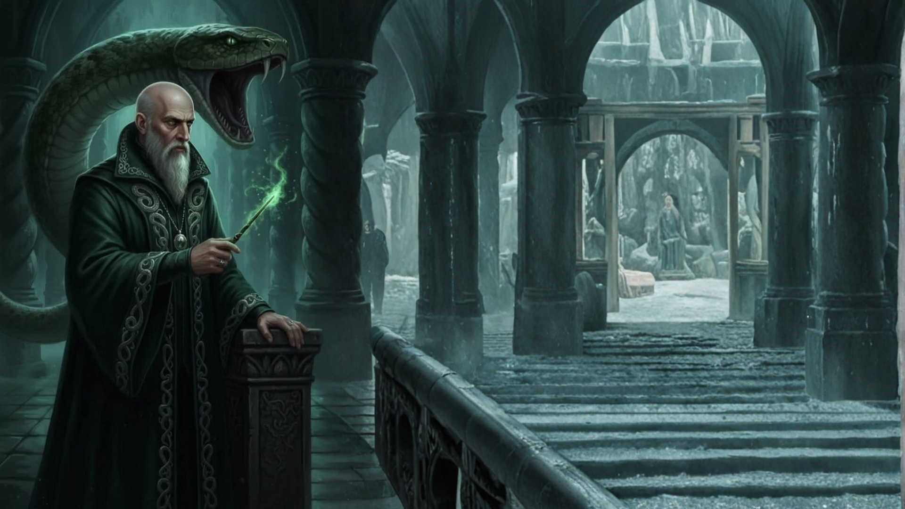

🐍 SECRETOS DE LAS MAZMORRAS
¿Sabías que...?
El Sombrero Seleccionador utiliza Legeremancia ancestral para analizar la mente de los estudiantes. Salazar Slytherin se aseguró de que el sombrero siempre detectara la ambición oculta y el deseo de grandeza.

¿Sabías que...?
Salazar Slytherin poseía el rarísimo don de la Lengua Pársel, la capacidad de hablar con las serpientes, una habilidad que transmitió a su linaje directo.

¿Sabías que...?
El agua del Lago Negro que rodea la Sala Común filtra una luz verde esmeralda relajante, permitiendo a los estudiantes observar criaturas marinas fascinantes mientras estudian.